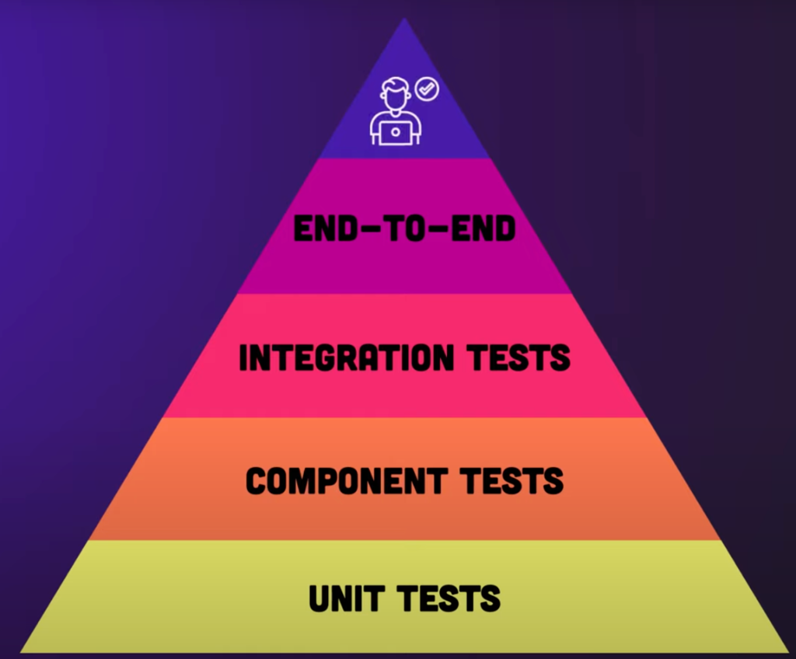

Clase 40:
Pruebas Unitarias e Integración en FastAPI
🎯 Estructura y Prácticas de esta Clase:
- 🦾 Práctica 1: Unit Testing & Test-Driven Development in FastAPI
- 💻 Proyecto Final: Building Bullet-Proof Applications
🔺 La Pirámide de Pruebas (Testing Pyramid)

🧪 Nivel 1: Unit Tests (Pruebas Unitarias)
Base de la Pirámide • Aislada y RápidaEs la base de la pirámide y el tipo de prueba más pequeño y rápido. Evalúa la pieza de código más diminuta posible (una sola función, método o cálculo) de forma completamente aislada del resto del sistema.
Le pasa una entrada fija a una función y verifica que devuelva exactamente la salida esperada, sin tocar bases de datos, redes ni pantallas.
Imagina que estás construyendo una bicicleta. Antes de armar nada, tomas un solo eslabón de la cadena, lo pones sobre la mesa y tiras de él con unas pinzas para ver si aguanta la tensión sin romperse. No te importa el resto de la bicicleta; solo quieres saber si esa pieza de metal hace su único trabajo individual.
🧩 Nivel 2: Component Tests (Pruebas de Componentes)
Nivel Intermedio • Subsistema AutónomoUn nivel intermedio donde agrupas varias unidades que juntas forman un subsistema autónomo (por ejemplo, un formulario completo en pantalla o un módulo de facturación).
Prueba cómo interactúan esas pocas piezas internas entre sí dentro de un entorno controlado, simulando ("mockeando") todo lo que venga de afuera para no depender de factores externos.
Ya comprobaste que los rayos, el rin y la llanta funcionan por separado. Ahora los ensamblas para armar la rueda completa. La colocas en un soporte de calibración en el taller y la haces girar con la mano: verificas que gire derecha y que el neumático no roce. La rueda aún no está pegada a la bicicleta ni toca el suelo, pero su mecanismo interno funciona como una unidad.
🔌 Nivel 3: Integration Tests (Pruebas de Integración)
Fronteras y Conexiones • Servicios RealesPruebas enfocadas exclusivamente en las fronteras y conexiones entre diferentes subsistemas, servicios o dependencias externas reales (como el servidor conectándose a la base de datos o una pasarela de pagos).
Verifica que el protocolo de comunicación, el formato de datos y las respuestas entre dos partes distintas encajen sin fricción y sin romper el contrato acordado.
Tomas los pedales, el plato y la rueda trasera con sus piñones, y les pasas la cadena. No estás rodando la bicicleta por la calle todavía; solo estás girando los pedales con la mano para comprobar un punto crítico de fricción: ¿la cadena salta entre los dientes o los engranajes transmiten el movimiento suavemente de una pieza a la otra?
🤖 Nivel 4: End-to-End (Pruebas de Extremo a Extremo / E2E)
Flujo Completo Automatizado • Simulación RealPruebas automatizadas que simulan el flujo completo de un usuario real a través de toda la aplicación, desde la interfaz visual hasta la base de datos y los servidores de fondo.
Abre un navegador o dispositivo virtual, hace clics, llena campos, envía formularios y comprueba que todo el sistema responda al unísono tal como lo experimentaría un cliente final.
La bicicleta está completamente armada. Un robot se sube a ella, pedalea 500 metros en una pista de pruebas, frena en una curva y enciende la luz delantera. Si el cable del freno estaba suelto o el sillín se baja con el peso, la prueba falla. Comprueba el propósito final del objeto: llevar a alguien de un punto a otro.
👑 Nivel 5: Pruebas de Usuario / Manuales y Exploratorias
👑 Cúspide de la Pirámide • Juicio Humano DirectoLa cúspide de la pirámide, donde interviene el juicio humano directo (exploratorio, pruebas de usabilidad y de aceptación).
Una persona real navega la aplicación buscando comportamientos extraños, inconsistencias visuales, problemas de comodidad o escenarios imprevistos que a ningún script automatizado se le ocurrió programar.
Un ciclista de carne y hueso saca la bicicleta a la montaña bajo la lluvia. Ninguna máquina puede medir si el manillar se siente resbaloso con guantes mojados, si el asiento es incómodo después de dos horas o si el timbre queda demasiado lejos del pulgar. Es la validación del sentido común frente a la realidad humana.
🃏 Testing en Frontend con `Jest`
import { loginUser } from './authService';
describe('Authentication Suite', () => {
test('login exitoso retorna token', async () => {
const res = await loginUser('user@example.com', '123456');
expect(res.status).toBe(200);
expect(res.data).toHaveProperty('access_token');
});
test('password incorrecto retorna 401', async () => {
const res = await loginUser('user@example.com', 'wrong');
expect(res.status).toBe(401);
});
});Es un poderoso framework de testing para JavaScript y TypeScript mantenido por Meta, optimizado para React, Node.js y aplicaciones web.
Ofrece funciones intuitivas como expect().toBe(), snapshots UI y runners integrados sin necesidad de configuraciones complejas.
🧪 Testing en FastAPI con `pytest` y `TestClient`
from fastapi.testclient import TestClient
from main import app
client = TestClient(app)
def test_login_exitoso():
response = client.post("/login", json={"username": "admin", "password": "123456"})
assert response.status_code == 200
assert "access_token" in response.json()
def test_login_password_incorrecto():
response = client.post("/login", json={"username": "admin", "password": "wrong"})
assert response.status_code == 401TestClient ejecuta las solicitudes HTTP directamente en memoria sin necesidad de levantar uvicorn.
Pytest evalúa expresiones Python estándar con assert y reporta diferencias de forma clara.
🛡️ Aislamiento y Patrón AAA (Arrange, Act, Assert)
Estándar de Oro • Pruebas Desacopladas🟢 1. pytest (El Framework de Pruebas)
Árbitro & Reglamento • Framework PrincipalEs un framework de testing para Python que permite escribir pruebas simples, escalables y legibles mediante aserciones nativas (assert). Descubre y ejecuta automáticamente los tests, gestiona suites complejas y ofrece soporte modular a través de plugins.
Es el reglamento oficial y el árbitro de las carreras. Se asegura de que todos los carritos compitan bajo las mismas reglas, vigila la pista y te dice con un silbato quién ganó y quién chocó.
Archivos de configuración en la raíz del proyecto como pytest.ini, pyproject.toml o setup.cfg.
⚙️ 2. Fixtures e Inyección de Dependencias
Setup & Teardown • Estado Inicial LimpioFunciones auxiliares reutilizables (decoradas con @pytest.fixture) que preparan el estado inicial necesario antes de un test (clientes HTTP, bases de datos aisladas, tokens de usuario) y limpian los recursos al terminar mediante generadores (yield).
Es el duende mágico que te deja la pista armada, limpia y con carritos listos antes de jugar, y al terminar guarda todo para que la siguiente carrera empiece impecable.
Comúnmente en conftest.py (para compartirlas globalmente entre varios tests) o directamente dentro del archivo de test específico (test_*.py).
🔄 3. Dependency Overrides
Sustitución de Entorno • FastAPI OverridesMecanismo nativo de frameworks como FastAPI (app.dependency_overrides) que permite interceptar los proveedores de dependencias del sistema (como la conexión a la base de datos o servicios de autenticación) y sustituirlos en memoria por versiones controladas de prueba.
Es cambiar el auto real de mamá o papá por uno de plástico de juguete mientras juegas, para no correr el riesgo de rayar o romper el auto de verdad en el garaje.
En conftest.py (dentro de la fixture del cliente de pruebas) o en el archivo de prueba puntual donde se requiera alterar una dependencia (test_*.py), operando sobre app.
🎭 4. Mocks (y simulación del tiempo)
Simulación Externa • Respuestas DeterministasObjetos simulados (unittest.mock.patch, MagicMock, freezegun) que reemplazan dependencias externas, no deterministas o costosas (APIs de terceros, pasarelas de pago, el reloj del sistema) para responder con datos fijos sin ejecutar llamadas de red ni esperar retrasos.
Es poner un peluche que contesta "¡Hola, todo bien!" fingiendo ser el astronauta por teléfono para no frenar la carrera, o adelantar las manecillas del reloj de juguete con el dedo en vez de esperar 3 horas reales a que se seque la pista.
Directamente en los archivos de pruebas (test_*.py) usando decoradores @patch o gestores de contexto with patch(...).
🕵️♂️ 5. Spies (Espías de Código)
Auditoría Silenciosa • Wrappers & Call MetricsEnvoltorios (wrappers) aplicados sobre funciones reales o mocks (spy en Jest, unittest.mock.Mock(wraps=...) en Python) para auditar su ejecución sin interferir en su lógica interna, registrando parámetros de entrada, valores de retorno y cantidad de llamadas.
Es el amigo detective que se para al lado de la pista con una libreta para vigilar en secreto y anotar exactamente cuántas vueltas dio el carrito y si cruzó la meta.
Dentro de las funciones de prueba en los archivos de test (test_*.py), o en conftest.py si se crea una fixture de espionaje recurrente.
📊 6. Métricas de Cobertura (Line vs. Branch Coverage)
Calidad de Código • pytest-cov / coverage.pyHerramientas de análisis dinámico (pytest-cov / coverage.py) que reportan qué proporción del código se transitó durante los tests. La cobertura de líneas mide sentencias ejecutadas; la de ramas (branch coverage) valida que se hayan evaluado todas las decisiones lógicas (if/else).
Es el mapa donde revisas qué tramos de la pista recorrieron los autos:
• Líneas: Probar solo la recta principal a toda velocidad y decir que la pista funciona al 100%.
• Ramas: Probar el cruce donde el camino se bifurca para ver qué pasa si el auto toma izquierda o derecha.
• 70% vs 100%: Vale más probar a fondo las curvas difíciles y el puente peligroso (70%) que pasear el carrito solo por rectas fáciles para inflar el número.
.coveragerc, secciones en pyproject.toml / pytest.ini, y reportes en terminal o carpetas htmlcov/.
🔄 Desarrollo Guiado por Pruebas (TDD)
Escribir una prueba antes de crear el código. La prueba debe fallar al inicio.
Escribir el código mínimo indispensable para lograr que la prueba pase a verde.
Optimizar el código manteniendo la batería de pruebas en verde.
🎯 Conceptos Clave que Deben Dominar
Cada prueba debe ser independiente y ejecutarse sobre datos limpios. Una prueba nunca debe depender del resultado de otra.
Funciones con @pytest.fixture para inyectar clientes TestClient o semillas de datos repetibles sin duplicar código.
No probar solo el "happy path". Verificar que la API retorne 400, 401 o 404 cuando reciba entradas inválidas.
Ejecutar pytest automáticamente en GitHub Actions antes de desplegar a producción para evitar regresiones.
💻 ¡Ahora a la Parte Práctica!
Demuestra lo aprendido aplicando los conceptos de esta clase en el proyecto práctico. Abre tu entorno de desarrollo y resolvamos los ejercicios interactivos.
Bullet-Proof Applications: TDD, Unit & Integration Testing in FastAPI
🟢 1. Happy Path (Camino Feliz)
Recorrido Ideal • Cero FricciónEs el recorrido ideal donde todo sale exactamente como se planeó. El usuario envía datos perfectos, el sistema cuenta con todos los recursos disponibles y no ocurre ninguna excepción.
Verificar que la funcionalidad principal hace lo que promete el negocio cuando no hay fricción ni errores.
Vas a comprar un café, pides el producto que sí está disponible, pagas con el importe exacto, la máquina funciona y te entregan el café sin demoras.
# Petición POST /users
payload = {"email": "juan@example.com", "password": "Pass1234!"}
# Resultado Esperado: HTTP 201 Created + Base de Datos actualizada + Token JWT
🟡 2. Edge Cases (Casos Límite o Borde)
Fronteras & Tolerancias • Escenarios AtípicosSituaciones donde las entradas o condiciones son extremas, raras o poco frecuentes, pero técnicamente posibles o válidas según las reglas de negocio.
Garantizar que el sistema no se rompa con datos atípicos y que respete las tolerancias máximas y mínimas definidas.
Vas a comprar el café, pero pagas con 100 monedas de 1 centavo, o pides el vaso con exactamente el límite máximo de hielo permitido. Es inusual y molesto, pero legal y el sistema debe saber procesarlo.
- Nombre de usuario con el límite máximo permitido (ej. exactamente 255 caracteres).
- Correo con formato válido pero inusual:
usuario+etiqueta@dominio.co.uk. - Enviar string vacío
""o array con 0 elementos en campos opcionales. - Intento de registrar un correo que ya existe (colisión con regla de unicidad).
🔴 3. Failure Modes (Modos de Falla)
Resiliencia & Seguridad • Entradas Maliciosas / RotasEscenarios donde los datos son explícitamente incorrectos, corruptos o maliciosos. No se busca el éxito, sino que el sistema falle de forma controlada y segura.
Prevenir errores 500, evitar fugas de información sensible y devolver errores 4xx estructurados.
Intentas pagar el café con un billete falso o una tarjeta vencida. La máquina no debe colapsar ni regalar el café; debe rechazar la transacción y mostrar "Pago declinado".
• JSON Malformado o falta de llave ➔ HTTP 400 Bad Request • Token JWT alterado o expirado ➔ HTTP 401 Unauthorized • Omitir campo obligatorio / tipo incorrecto ➔ HTTP 422 Unprocessable Entity
📊 4. Resumen Comparativo de Escenarios
Matriz de Decisiones QA| Concepto | Tipo de Entrada | Intención | Respuesta Esperada |
|---|---|---|---|
| 🟢 Happy Path | Válida y típica | Operación normal de negocio | Éxito (200 OK, 201 Created) |
| 🟡 Edge Cases | Extrema o inusual | Probar límites de tolerancia | Éxito o validación esperada |
| 🔴 Failure Modes | Inválida, rota o maliciosa | Probar resiliencia y seguridad | Error controlado (4xx) |
📡 Diagrama Conceptual / Flujo de Datos
+------------------+ +-----------------------+ +--------------------------+
| Pytest TestSuite | ------> | FastAPI TestClient | ------> | Override app.dependency |
+------------------+ +-----------------------+ | (Test DB In-Memory) |
+--------------------------+
|
+------------------+ +-----------------------+ v
| Assert Status | <------ | Execute Request & | <---------------------+
| & JSON Payload | | Rollback DB Session |
+------------------+ +-----------------------+
📂 Estructura de Archivos Sugerida
monorepo/
├── TESTING.md <-- Plan de pruebas, ejecución y registro de bugs/IA
├── backend/ <-- FastAPI app
│ ├── pyproject.toml <-- Dependencias gestionadas con uv (pytest, pytest-cov, httpx)
│ ├── app/
│ │ ├── main.py
│ │ ├── core/ <-- Seguridad, hashing, jwt handlers
│ │ ├── routers/
│ │ │ └── auth.py <-- Endpoints (/register, /login, /refresh, /me)
│ │ └── schemas/
│ └── tests/ <-- Batería de pruebas con pytest
│ ├── conftest.py <-- Fixtures: TestClient, db_session simulada, tokens de prueba
│ ├── test_auth_register.py <-- Happy path, edge cases, failure modes
│ ├── test_auth_login.py
│ └── test_auth_token.py <-- Expiración, firmas falsas, validación
│
└── frontend/ <-- Next.js / TypeScript app
├── jest.config.ts <-- Configuración de Jest con ts-jest
├── package.json
├── src/
│ └── utils/ <-- Funciones utilitarias (formatters, validators, jwt decode)
└── src/__tests__/ <-- Pruebas con Jest
└── auth_helpers.test.ts <-- Happy path y failure modes de utilidades TS
⚠️ Puntos Trampa (Gotchas) & Criterios Ready for Production
conftest.py define fixtures reutilizables con scope de función.app.dependency_overrides garantiza que ningún test toque la base de datos de desarrollo.🚗 Parte 1: Selenium
WebDriver Protocol • Automatización ExternaEs una herramienta veterana de automatización que controla navegadores web desde afuera. Funciona enviándole comandos a un intermediario (un "driver") para que abra Chrome, Firefox o Safari y haga clics o escriba datos tal como lo haría un usuario.
Permite probar aplicaciones completas en prácticamente cualquier navegador y sistema operativo, y soporta múltiples lenguajes de programación (Python, Java, C#, JavaScript).
Imagina que tienes un autito a control remoto. Tú estás parado lejos en la sala con un control en las manos: cuando presionas un botón, la antena manda una señal por el aire al auto para que avance o gire. Selenium es ese control remoto: maneja el navegador desde afuera enviándole órdenes a distancia.
from selenium import webdriver driver = webdriver.Chrome() driver.get("https://mi-app.com/login") driver.find_element("name", "email").send_keys("user@example.com")
⚡ Parte 2: Cypress
In-Browser Execution • Time Travel DebuggingEs una herramienta moderna de pruebas construida específicamente para la web actual. A diferencia de Selenium, Cypress no maneja el navegador desde afuera, sino que se ejecuta adentro del propio navegador (en el mismo ciclo de eventos que tu aplicación JavaScript).
Permite hacer pruebas de punta a punta (E2E) e integración súper rápidas, ver exactamente qué pasaba en la pantalla en cada paso (Time Travel) y manipular el estado de la app en tiempo real.
Imagina que te encoges de tamaño y te sientas adentro del autito a control remoto, agarrando el volante directamente. En lugar de mandar señales por el aire que pueden tardar o perderse, estás ahí adentro: ves el camino en tiempo real, frenas al instante y si algo falla, sabes exactamente qué engranaje falló porque estás sentado al lado del motor.
cy.visit('/login'); cy.get('input[name="email"]').type('user@example.com'); cy.get('button[type="submit"]').click(); cy.url().should('include', '/dashboard');
📊 Parte 3: Comparativa entre Selenium y Cypress
Matriz de Arquitectura & Herramientas| Criterio | 🚗 Selenium (Control Remoto) | ⚡ Cypress (In-Browser) |
|---|---|---|
| 🏛️ Arquitectura | Control remoto vía HTTP WebDriver (fuera) | Ejecución directa en el Event Loop (dentro) |
| 💻 Lenguajes | Python, Java, C#, JS, Ruby | JavaScript / TypeScript nativo |
| ⚡ Velocidad & Debug | Intermedia/Lenta, requiere logs externos | Ultra rápida, Time Travel & DOM snapshots |
| 🌐 Navegadores | Todos (Chrome, Firefox, Safari, Edge, IE) | Chromium, Firefox y Electron |
| 💡 Analogía Feynman | Manejar una grúa gigante desde una cabina a 50 metros. | Moldear la arcilla directamente con tus manos. |
🎯 Parte 4: Misión: Blindar la API de Autenticación con Pruebas
Desafío Práctico • Coverage ≥ 70%
En la clase de hoy aprendiste a probar tus endpoints con pytest y TestClient. Ahora es momento de poner a prueba la API de autenticación que construiste previamente.
TESTING.md:
Crear TESTING.md en la raíz para definir estrategia, comandos y hallazgos.
Escribir pruebas unitarias e integración con pytest para /register, /login y /refresh.
Asegurar una cobertura de código $\ge 70\%$ en el backend (pytest --cov=app).
Probar los flujos en el frontend utilizando Jest/Vitest o la herramienta de tu stack.